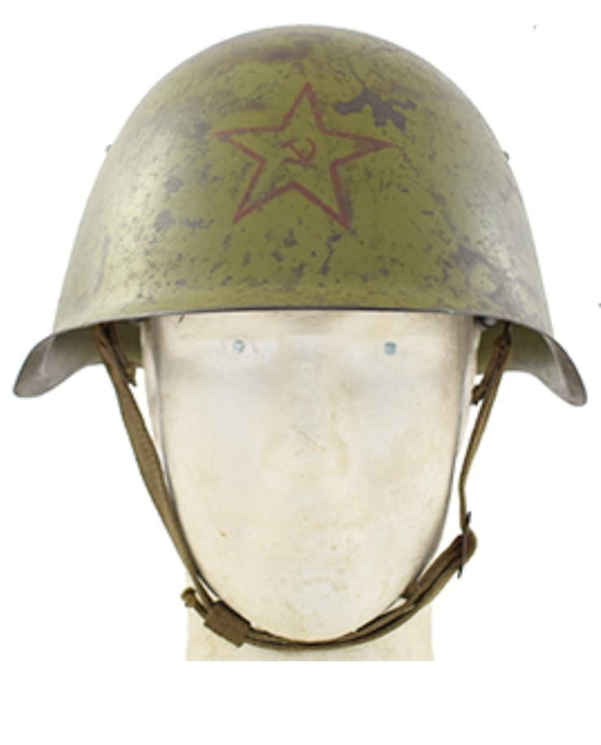
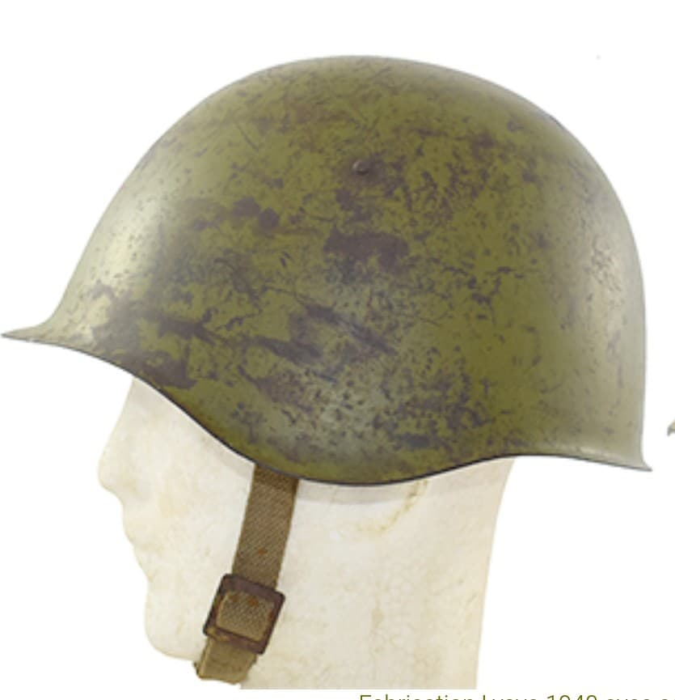
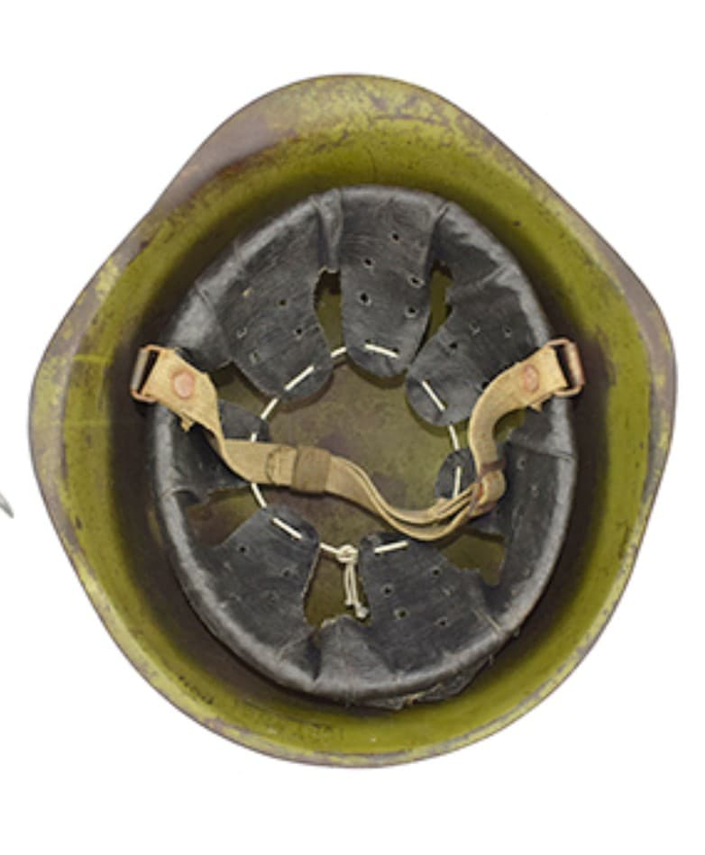

Le casque soviétique SSh‑39 est le successeur direct du SSh‑36. Introduit en 1939, il adopte une forme plus arrondie et simplifiée, mieux adaptée aux besoins de production de masse de l’Armée rouge à l’aube de la Seconde Guerre mondiale.
Il est largement utilisé durant les premières années du conflit, notamment pendant l’opération Barbarossa en 1941.

Le SSh‑39 se distingue par sa coque arrondie et ses 6 rivets latéraux, signature du modèle. Il conserve une peinture verte mate typique de l’Armée rouge.
Son liner en toile et cuir est plus simple que celui du SSh‑36, mais reste robuste et adapté aux conditions extrêmes du front de l’Est.


Le SSh‑39 est porté durant :
Il est progressivement remplacé par le SSh‑40, plus simple à produire.